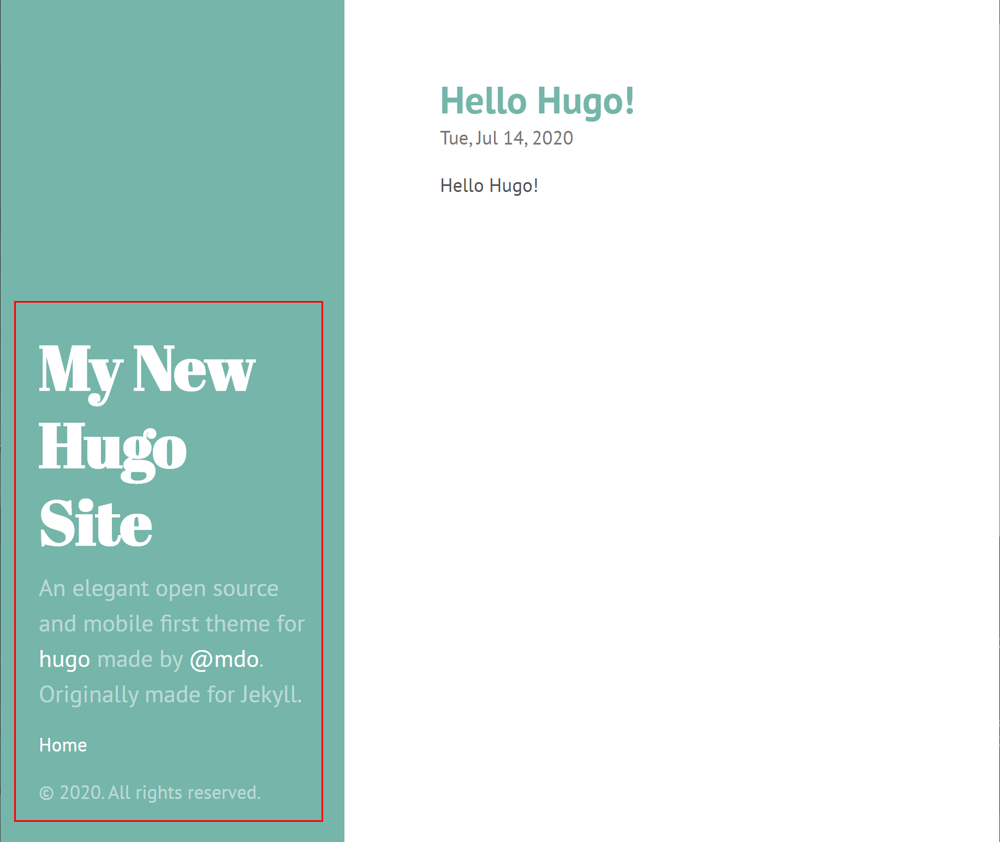
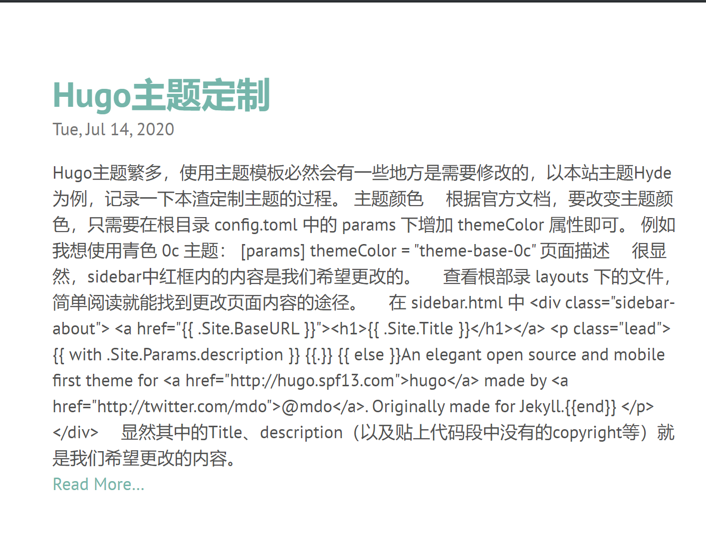
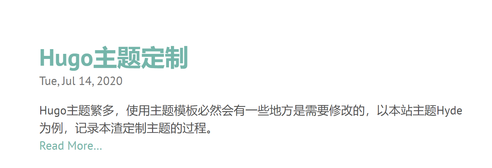

Hugo主题定制
Hugo主题繁多，使用主题模板必然会有一些地方是需要修改的，以本站主题Hyde为例，记录一下本渣定制主题的过程。
主题颜色

根据官方文档，要改变主题颜色，只需要在根目录 config.toml 中的 params 下增加 themeColor 属性即可。 例如我想使用青色 0c 主题：
[params]
themeColor = "theme-base-0c"
页面描述

很显然，sidebar中红框内的内容是我们希望更改的。
查看根部录 layouts 下的文件，简单阅读就能找到更改页面内容的途径。
在 sidebar.html 中
<div class="sidebar-about">
<a href="{{ .Site.BaseURL }}"><h1>{{ .Site.Title }}</h1></a>
<p class="lead">
{{ with .Site.Params.description }} {{.}} {{ else }}An elegant open source and mobile first theme for <a href="http://hugo.spf13.com">hugo</a> made by <a href="http://twitter.com/mdo">@mdo</a>. Originally made for Jekyll.{{end}}
</p>
</div>
显然其中的Title、description（以及贴上代码段中没有的copyright等）就是我们希望更改的内容。
同样，在根目录 config.toml 中的 params 下增加相关属性即可。 例如：
title = "Teza小站"
[params]
description = "无名小站，始于2020-7-14，记录某大学仔学习历程。"
copyright = "Copyright (c) 2020, Guanda Wei"
首页博客列表描述
博客列表默认显示文章的所有内容，当文章内容过长时看上去就很不舒服，而且会直接输出.md文件的源码内容，就像这样 ↓

查看 index.html ，可以看到控制这段文字输出的是以下部分
{{ .Summary }}
于是在.md头部补上Summary（这一点其实并不算是定制主题的一部分，只是自己在写博客时发现的一点小问题，所以一并写上）
Summary: "Hugo主题繁多，使用主题模板必然会有一些地方是需要修改的，以本站主题Hyde为例，记录本渣定制主题的过程。"
效果如下 👇

另外时间的格式时偏向西方，我个人而言肯定还是习惯于阅读年-月-日这样格式的时间。继续修改 index.html 中的内容：
{{ .Date.Format "2006-1-2" }}
效果如下 👇

代码高亮
作为秃头计算机生，代码没有高亮显然是不能忍的。

网上查阅资料权衡后，选择 HighLight.js 来作为小站代码高亮工具。
在 head_fonts.html 中引入 css，在 hook_head_end.html 中引入 js，实现代码高亮效果。
head_fonts.html:
<!-- 代码高亮 -->
<link href="https://cdn.bootcdn.net/ajax/libs/highlight.js/10.1.1/styles/atom-one-dark-reasonable.min.css" rel="stylesheet">
hook_head_end.html:
<!-- 代码高亮 -->
<script src="https://cdn.bootcdn.net/ajax/libs/highlight.js/10.1.1/highlight.min.js"></script>
<script>hljs.initHighlightingOnLoad();</script>
至此，基本定制工作完成！~ 😏
2022-3-31更新
Mermaid 支持
首先，官方的渲染是通过<div class="mermaid"></div>标签将 div 中的内容渲染成图表的。然而咱们在 typora 中写 mermaid 的方式则是通过代码块来实现，如下：
```mermaid
graph TD;
A-->B;
A-->C;
B-->D;
```
hugo 在渲染代码块时，是将其渲染为以下 html：
<pre><code class="language-语言种类">
<!-- code -->
</code></pre>
所以咱们的核心思路即是：如何将<pre><code class="language-mermaid"></code></code>替换为<div class="mermaid"></div>。本人并不太懂 js 代码，直接搬运了大佬的实现（原文放在下面的参考文档中了）。
<!-- mermaid JS 导入 -->
<script src="https://cdn.bootcdn.net/ajax/libs/mermaid/8.14.0/mermaid.min.js"></script>
<script>
// Replace mermaid pre.code to div
Array.from(document.getElementsByClassName("language-mermaid")).forEach(
(el) => {
el.parentElement.outerHTML = `<div class="mermaid">${el.innerText}</div>`;
}
);
mermaid.initialize({ startOnLoad: true });
</script>
<!-- 别忘了把渲染出的svg居中显示 -->
<style>
svg {
display: block;
margin: auto;
}
</style>
需要注意的是，核心的代码需要放在页面最下方（最好是放在<body>标签的最后），这样才能正常把所有的<pre><code class="language-mermaid"></code></code>替换为<div class="mermaid"></div>，如下图：

由于我用的 hyde 主题默认是没有在 body 后的模版的，所以就自己小改一下代码吧～
-
在 themes>hyde>layouts>_default>baseof.html（正如其名字，这是 hyde 的页面基础架构模版）的
<body>最后声明要添加一个模版文件 body_end.html。{{ partial "head.html" . }} <body class="{{ .Site.Params.themeColor }} {{if .Site.Params.layoutReverse}}layout-reverse{{end}}"> {{ partial "sidebar.html" . }} <main class="content container"> {{ block "main" . -}}{{- end }} </main> {{ if not .Site.IsServer }} {{ template "_internal/google_analytics.html" . }} {{ end }} <!-- 新增的代码 --> {{ partial "body_end.html" . }} </body> </html> -
在 themes>hyde>layouts>partials>body_end.html（新建）内写上引入 mermaid 支持的代码。
<!-- mermaid JS --> <script src="https://cdn.bootcdn.net/ajax/libs/mermaid/8.14.0/mermaid.min.js"></script> <script> // Replace mermaid pre.code to div Array.from(document.getElementsByClassName("language-mermaid")).forEach( (el) => { el.parentElement.outerHTML = `<div class="mermaid">${el.innerText}</div>`; } ); mermaid.initialize({ startOnLoad: true }); </script> -
在 themes>hyde>layouts>partials>head_fonts.html 内修改生成的 svg 标签的样式。
<style> svg { display: block; margin: auto; } </style> -
最终效果⬇️
graph TD;
A-->B;
A-->C;
B-->D;
参考文档：